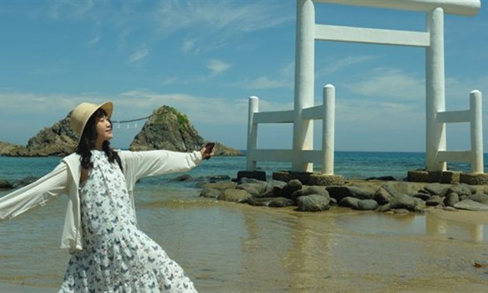
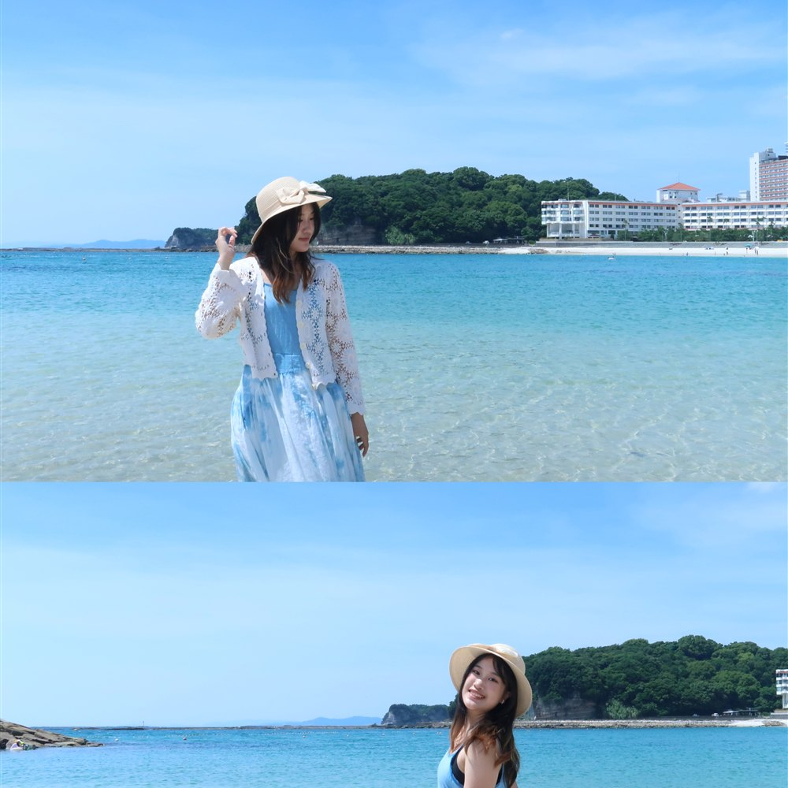

日本語
Self-taught
to JLPT N1
No class, no tutor — years of stubborn daily contact. N1 is the top of the ladder, and the point where the language stops being a subject and starts being a second way of arranging thoughts. Eighteen days in Niigata and Tokyo mentoring high school students put it to work.
Elsewhere